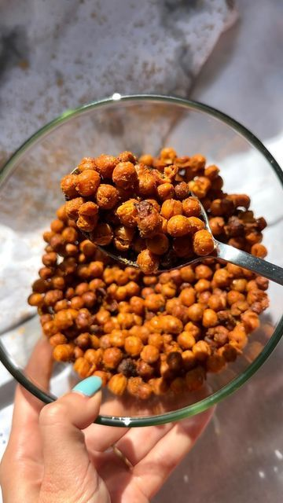

Ingredients
- 1 can chickpeas, drained and rinsed
- 1 tbsp olive oil
- 1/2 tsp paprika
- 1/4 tsp garlic powder
- Salt to taste
Instructions
- Preheat air fryer to 390°F (200°C).
- Pat chickpeas dry and toss with oil and seasonings.
- Air fry for 12–15 minutes, shaking halfway through.
- Cool slightly before serving for maximum crunch.